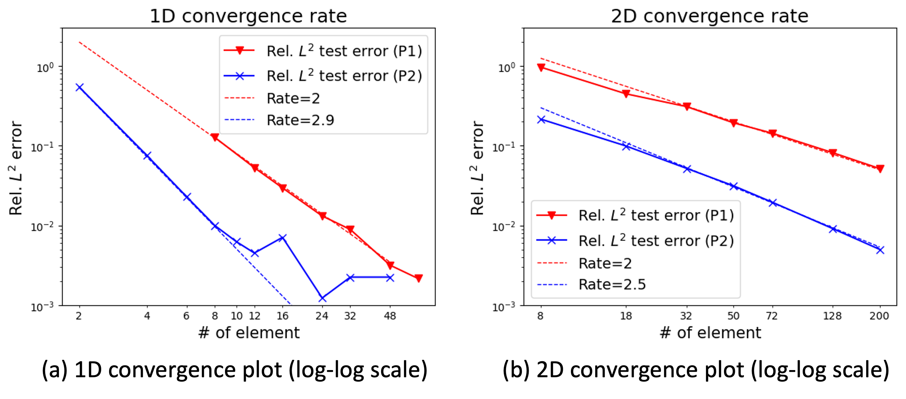
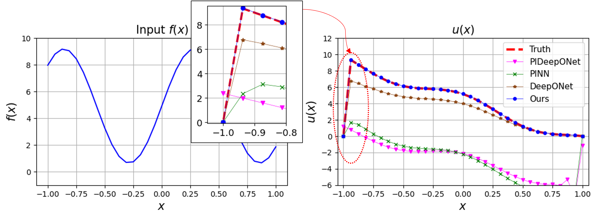

For a follow-up study on error analysis related to this paper, please refer to the following work:
Error Analysis for Finite Element Operator Learning Methods for Solving Parametric Second-Order Elliptic PDEs.
Partial differential equations (PDEs) underlie our understanding and prediction of natural phenomena across numerous fields, including physics, engineering, and finance. However, solving parametric PDEs is a complex task that necessitates efficient numerical methods. In this paper, we propose a novel approach for solving parametric PDEs using a Finite Element Operator Network (FEONet). Our proposed method leverages the power of deep learning in conjunction with traditional numerical methods, specifically the finite element method, to solve parametric PDEs in the absence of any paired input-output training data. We performed various experiments on several benchmark problems and confirmed that our approach has demonstrated excellent performance across various settings and environments, proving its versatility in terms of accuracy, generalization, and computational flexibility. While our method is not meshless, the FEONet framework shows potential for application in various fields where PDEs play a crucial role in modeling complex domains with diverse boundary conditions and singular behavior. Furthermore, we provide theoretical convergence analysis to support our approach, utilizing finite element approximation in numerical analysis.
The FEONet can predict numerical solutions of the PDEs when given the initial conditions, external forcing functions, PDE coefficients, or boundary conditions as inputs. Therefore, the FEONet can learn multiple instances of the solutions of PDEs, making it a versatile approach for solving different types of PDEs in complex domains.
Solution profiles for complex geometries.
Rel. L2 error of the FEONet with respect to the number of elements. One of the intriguing aspects is that the theoretical results on the convergence error rate of the FEONet are also observable.
Input function f and the corresponding approximate solution u obtained by various deep-learning-based methods for the singular perturbation problem with epsilon=1e-5.
@article {MR4888707,
AUTHOR = {Lee, Jae Yong and Ko, Seungchan and Hong, Youngjoon},
TITLE = {Finite {E}lement {O}perator {N}etwork for {S}olving
{E}lliptic-{T}ype {P}arametric {PDE}s},
JOURNAL = {SIAM J. Sci. Comput.},
FJOURNAL = {SIAM Journal on Scientific Computing},
VOLUME = {47},
YEAR = {2025},
NUMBER = {2},
PAGES = {C501--C528},
ISSN = {1064-8275,1095-7197},
MRCLASS = {99-06},
MRNUMBER = {4888707},
DOI = {10.1137/23M1623707},
URL = {https://doi.org/10.1137/23M1623707},
}
@article{hong2024error,
title={Error analysis for finite element operator learning methods for solving parametric second-order elliptic PDEs},
author={Hong, Youngjoon and Ko, Seungchan and Lee, Jaeyong},
journal={arXiv preprint arXiv:2404.17868},
year={2024}
}